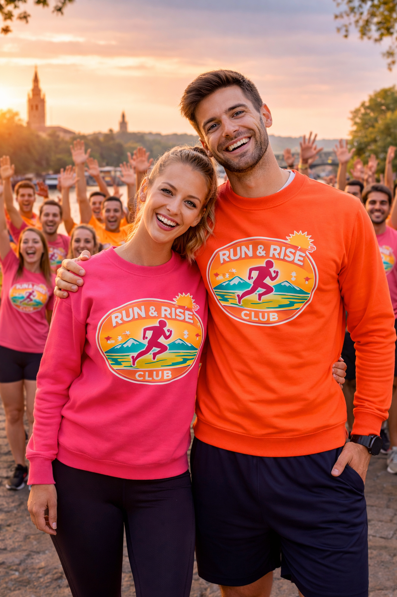

Running · Comunidad · Viajes · Superación
Run & Rise Club es un club de running que une vida saludable, amistad, motivación y experiencias compartidas a través de quedadas semanales, carreras y escapadas a eventos deportivos.

Momentos del club
Filosofía